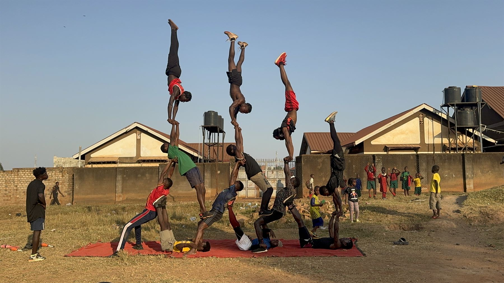
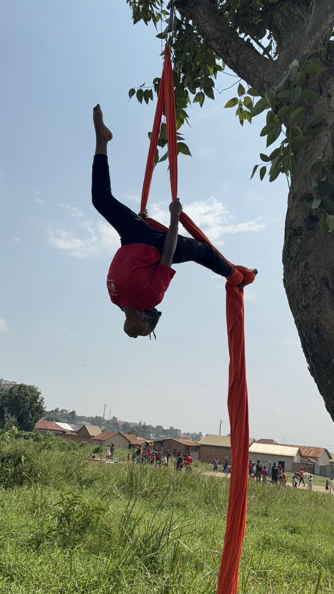
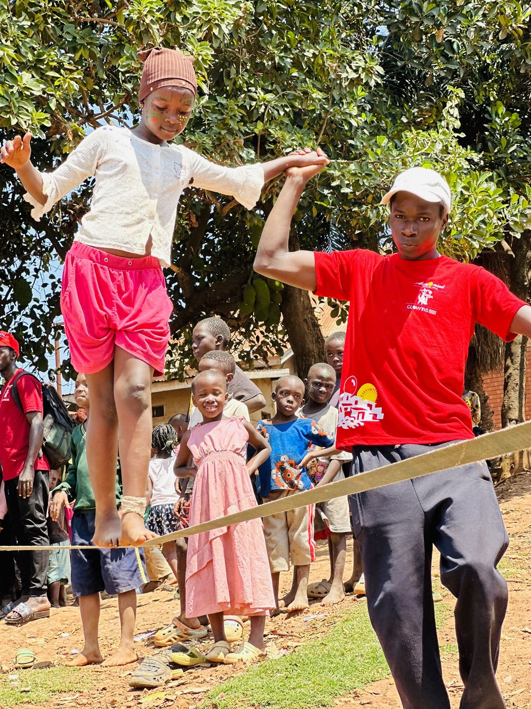
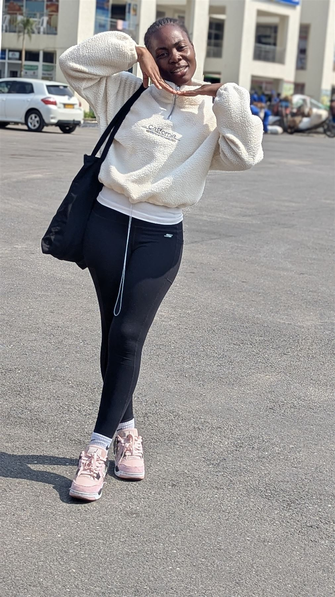

Circus for development
Acrobatics, juggling, and performance help children build coordination, courage, and a voice of their own.
Acromind Initiative
We create safe spaces in Uganda where vulnerable children and young people discover confidence, community, and possibility through creative expression.
Our programmes
Our work brings together movement, mentorship, and creative expression to help young people grow into their full potential.
Acrobatics, juggling, and performance help children build coordination, courage, and a voice of their own.
Young people learn to lead, collaborate, and turn their ideas into positive action in their communities.
We connect children with caring mentors and a supportive network where every person belongs.
Our impact
AcroMind Initiative is a Uganda-based non-profit transforming the lives of vulnerable children and youth through circus arts. Every workshop ends with a small showcase, and every round of applause becomes a reminder that this young person has worth.
From the field
Read reflections and updates from Acromind programmes and the communities around them.
Spotlight
In every workshop, the smallest step can become a leap. Young performers are finding new ways to express themselves and imagine what comes next.
Read the latest story



Acromind artist and member
Kiguli Lawrence is one of the talented artists and valued members of the Acromind community. During an evening event, his fire-breathing performance lit up the stage and filled the air with courage, energy, and joy. He brings a rare mix of skill, confidence, and presence that makes every performance unforgettable.
He is a proud part of the Acromind family, and his work continues to inspire young people and audiences alike. We celebrate Kiguli Lawrence as a fearless artist, a dedicated member of our community, and a shining example of the creativity, discipline, and spirit that make Acromind so special.
Support the next generation
Acromind community
Faides is a Zambian participant in Acromind Initiative’s work. Her presence reflects the creativity and promise at the heart of our community, and why every young person deserves room to express themselves and grow.
Explore our programmesStand with young people
Whether you give your time, your skills, or your support, you can help create a future where children and youth thrive.
Connect with usSupporters and community
Stay connected